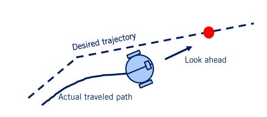
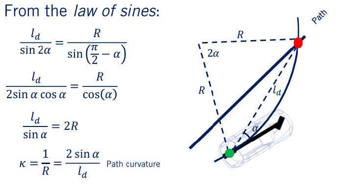
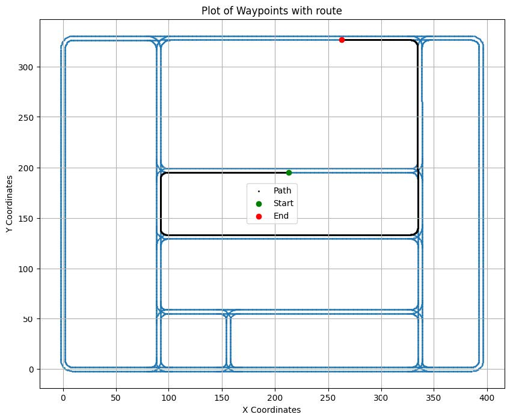
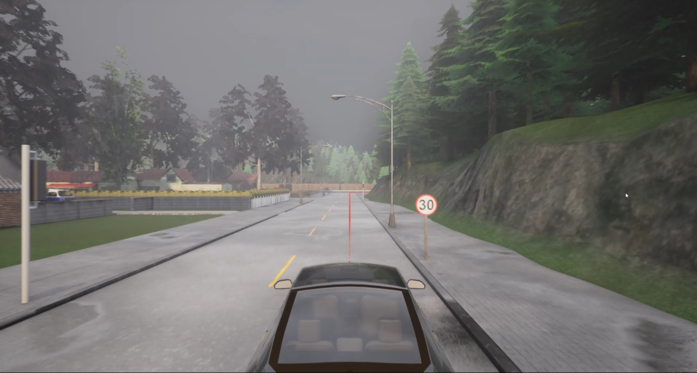
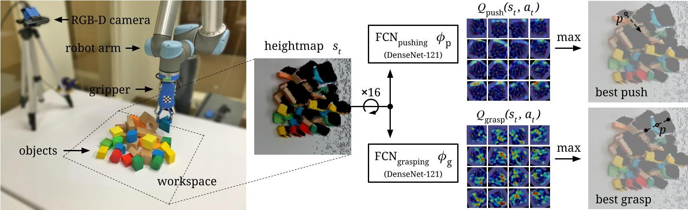
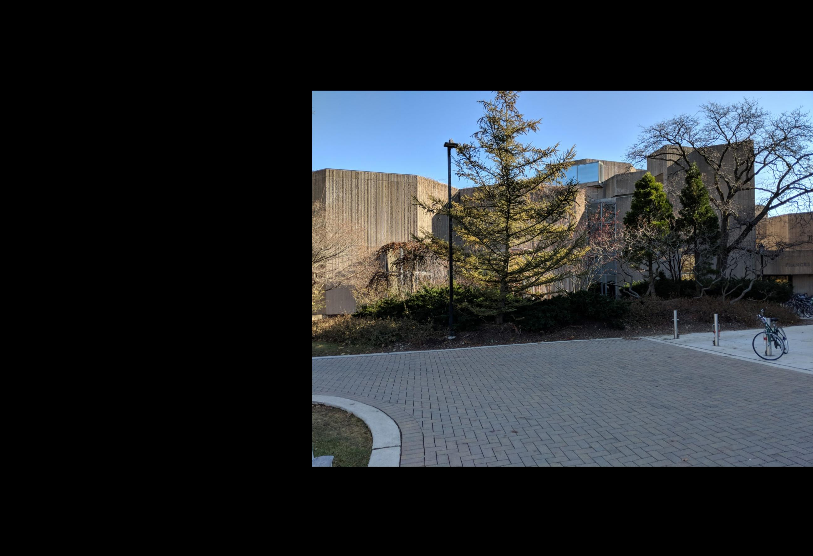
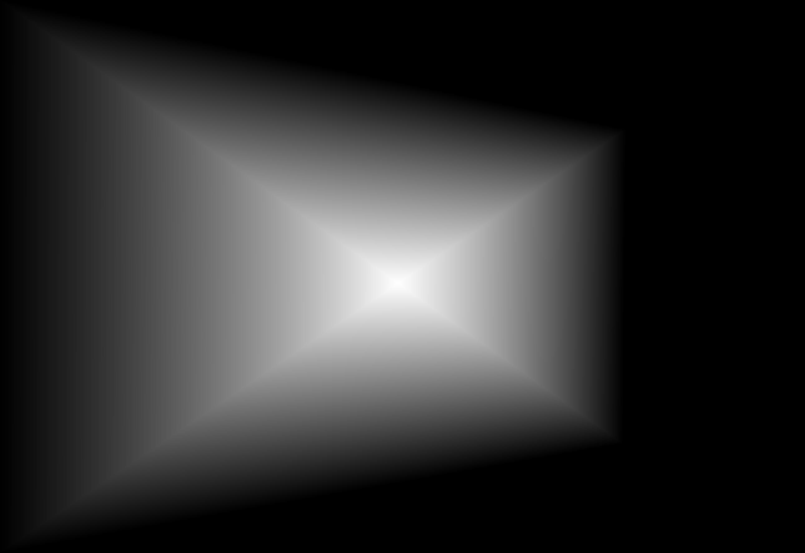
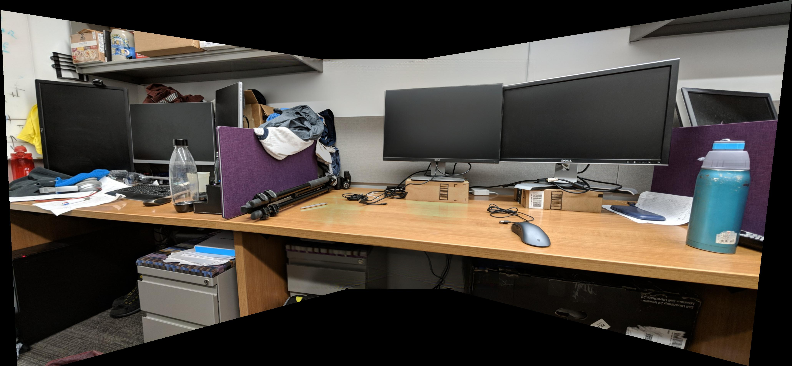
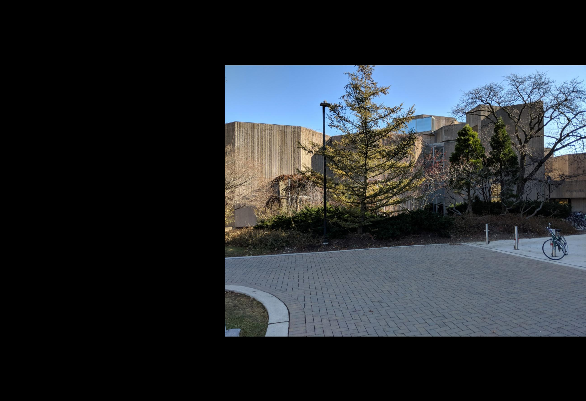
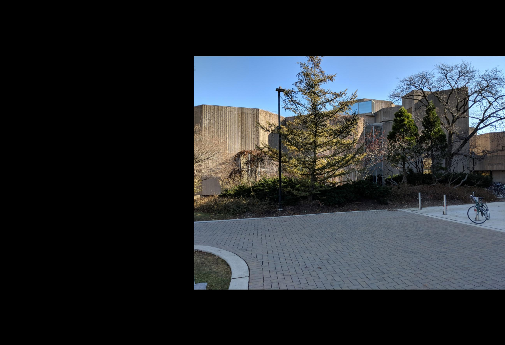

ROS | CV | Motion Planning Baxter Robot pick up a nerf gun, locate a cup, pull the nerf gun trigger to shoot the cup when given a user input, and move to a final pose
Mobile Manipulation
Manipulation | Motion Planning KUKA youBot to pick up a block at the start location and carry it to the desired location in the simulation software V-REP
Visual Pushing and Grasping
Deep Reinforcement Learning | Docker Train robotic agents to learn to plan pushing and grasping actions for manipulation with deep reinforcement learning
ImageMosaic
Computer Vision Create an image panorama by stitching a set
of images together
Pin-triangle Dynamics Simulation
Dynamics | Simulation Simulation of a triangle bouncing in the enclosed rectangle
This report presents the development and implementation of a sophisticated multi-agent pathfinding (MAPF) system, designed to
navigate multiple agents—specifically kings on a chessboard—through a complex environment without collisions. The project leverages
advanced algorithmic techniques within a constrained computational framework to address the challenge of sequential agent movements
on a grid with restricted areas. Utilizing a modified A* search algorithm, extended to include temporal and spatial dimensions
(space-time A*), and integrating Conflict-Based Search (CBS) for conflict resolution, this system ensures optimal and collision-free navigation.
The system handles the intricacies of MAPF by enforcing strict movement rules that prevent agents from moving into restricted cells
and from ending movements adjacent to each other. The core of the solution involves dynamic constraint generation and management,
facilitating the detection and resolution of both vertex and edge type collisions.
Extensive testing on various scenarios confirms the robustness and efficiency of the planner. The algorithm successfully computes viable
paths for all agents or accurately detects scenarios where no path exists. This project not only showcases a technical solution to a complex
problem but also contributes to the broader field of robotics and automated systems by providing a scalable model for multi-agent navigation
in constrained environments.
Algorithm Design and Approach
The core of my solution utilizes a space-time A* search algorithm, modified to incorporate constraints that prevent collisions both in terms
of position and time.
• Space-Time A* Algorithm: This involved modifying the traditional A* algorithm to consider time as a dimension, allowing the planner to handle
dynamic constraints across different timesteps.
• Conflict-Based Search (CBS): I further enhanced the solution by integrating CBS, an approach that is optimal and complete for solving
multi-agent pathfinding problems. CBS works by detecting conflicts among paths and resolving them by imposing constraints that split the
search space. The algorithm mainly identifies two types of collisions:
o “Vertex Type”: A vertex type collision occurs when two or more agents occupy the same cell at the same timestep. For example, consider
a scenario where:
▪ King A is supposed to move to cell (x, y) at timestep t.
▪ Simultaneously, Agent B also moves to cell (x, y) at timestep t.
This results in a vertex collision at cell (x, y) at timestep t, which must be resolved to ensure that the agents can proceed without
interference.
o “Edge type”: Edge type collisions, also known as swap collisions, occur when two agents attempt to traverse the edge between two cells
in opposite directions simultaneously. In essence, they "pass" each other in the grid, resulting in a collision. For instance:
▪ Agent A moves from cell (x, y) to cell (x+1, y) at timestep t.
▪ At the same time, Agent B moves from cell (x+1, y) to cell (x, y) at timestep t.
This results in an edge collision between the paths of Agent A and Agent B between timesteps t−1 and t, and it must be resolved to avoid a
conflict in the paths.
Managing Collisions
To manage these collisions, strategies like CBS use a two-level search. The high level of the search builds a constraint tree where each node
represents a set of constraints derived from detected collisions. When a collision is detected, it is resolved by creating constraints that
prevent at least one of the conflicting moves, thereby branching into new nodes in the search tree.
For vertex collisions, the constraint might involve preventing one or more agents from entering the conflicting cell at the specific timestep.
For edge collisions, the constraint might prevent one or both of the agents from making their respective moves at the specified timestep.
Both types of collisions and their resolutions are central to ensuring that the path-finding algorithm can find viable paths for all agents without
interference, thus guaranteeing that the solution is not only feasible but also optimal in terms of path length and time.
Results and Conclusions
The developed planner successfully met the requirements outlined in the problem statement. It was able to compute paths for the kings or detect the
absence of viable paths (if present) within the stipulated time frame.
Figure 1: Visualization of the multi-agent pathfinding results
This project not only highlighted my technical skills in algorithm design and optimization but also reinforced my ability to apply theoretical concepts
to practical, real-world problems.
This project delves into the development of a sophisticated vehicle control system implemented in the CARLA simulation environment. The system integrates both longitudinal and lateral control mechanisms to navigate a vehicle accurately through predefined waypoints in a simulated urban landscape. The primary objective is to create a comprehensive control system that ensures precise vehicle control by managing speed, acceleration, and steering. This system incorporates PID controllers for longitudinal and lateral control, facilitating smooth navigation through turns and straight paths. Key components include a global route planning mechanism that efficiently calculates the optimal path between waypoints and algorithms for precise control. Operating within the CARLA simulation platform, this project aims to validate and demonstrate the efficiency of the control system in a realistic urban setting. Through this endeavor, the project seeks to contribute to the advancement of autonomous vehicle technology by showcasing a robust control system capable of navigating urban environments effectively. The successful implementation of this system signifies a significant stride toward enhancing autonomous vehicle capabilities in real-world urban transportation scenarios.
Introduction
1. Project Overview
The project involves developing a vehicle control system within the CARLA simulation environment. It incorporates longitudinal and lateral control mechanisms along with route planning to navigate a vehicle through predefined waypoints. The system aims to demonstrate efficient and accurate vehicle control in a simulated urban environment.
2. Purpose
The primary purpose is to create a comprehensive control system that orchestrates both longitudinal (speed and acceleration) and lateral (steering) control of a vehicle. This system should exhibit smooth navigation and adherence to a defined path while considering the dynamic environment. This system aims to showcase efficient route planning and precise vehicle control.
3. Goals of the Project
Route Planning: Develop and implement a reliable global route planner using the A* algorithm to compute optimal paths based on randomly selected start and goal locations in the CARLA environment.
Precise Vehicle Control: Integrate sophisticated planning algorithms and control mechanisms seamlessly into CARLA’s simulation platform for cohesive execution and validation.
Waypoint Following using PID and Pure Pursuit Controller: Implement a PID-based longitudinal controller for speed regulation and a Pure Pursuit algorithm for precise lateral control (steering). Enable the vehicle to accurately follow generated waypoints while maintaining appropriate speed and smooth steering adjustments.
Performance Evaluation of Planner and Controller in Simulated Environment: Develop and apply comprehensive evaluation metrics to assess the performance of the planner and controllers within CARLA’s simulated environment. Conduct thorough testing to evaluate path accuracy, control precision, and overall system reliability. Iterate and refine the system based on performance evaluations to enhance efficiency and accuracy within a controlled setting.
Code Overview
1. Purpose of Each Import and Library
CARLA Python API: Provides access to CARLA functionalities, enabling interaction with the simulator environment.
Network: Used for graph representation and manipulation, essential for constructing the road network and performing route planning.
PID Controller Module: Utilizes the Pure Pursuit algorithm for lateral control, calculating steering angles.
Math Libraries: Utilized for mathematical calculations related to control signal generation, distance calculations, and waypoint transformations.
2. Description of the Main Function and Its Components
Global Route Planner: Constructs a road network topology using CARLA waypoints and converts it into a graph representation. Employs the A* search algorithm to trace a route from the starting point to the destination.
Longitudinal Controller: Responsible for controlling the vehicle’s speed, incorporating a PID controller that computes throttle and brake signals to achieve and maintain the desired speed.
Lateral Controller (Pure Pursuit): Computes steering angles based on the Pure Pursuit algorithm, selecting target waypoints and calculating steering angles to guide the vehicle along the planned route.
Utility Functions: Support the main components by generating control signals, calculating distances between waypoints, and facilitating mathematical operations essential for vehicle control.
Project Components
1. Global Route Planner Module
Purpose: Create a topological representation of the road network using the CARLA waypoints. Construct a graph-based representation allowing for efficient route planning.
Functions:
Build Road Network: Converts CARLA waypoints into a graph structure, creating nodes and edges that represent the road layout.
A* Search Algorithm: Implements the A* search algorithm to find the shortest path between the starting and ending waypoints.
2. Longitudinal Controller Module
Purpose: Manages the vehicle’s longitudinal motion, focusing on speed control through a PID controller.
Functions:
PID Controller: Computes throttle and brake signals to maintain a set speed, ensuring smooth acceleration and deceleration.
Speed Regulation: Adjusts the vehicle’s speed based on the desired velocity and current speed feedback.
3. Lateral Controller Module
Purpose: Controls the vehicle’s lateral motion by determining steering angles necessary to follow the planned route.
Functions:
Pure Pursuit Algorithm: Implements the Pure Pursuit algorithm to calculate steering angles based on the target waypoints.
Target Waypoint Selection: Identifies the appropriate waypoints and calculates the steering angles required to navigate the vehicle along the desired path.
4. Utility Functions Module
Purpose: Provides support functions and calculations required by other modules for seamless operation.
Functions:
Control Signal Generation: Generates control signals such as throttle, brake, and steering angles required for vehicle control.
Distance Calculations: Computes distances between waypoints and assists in determining the vehicle’s position within the environment.
Mathematical Operations: Performs necessary mathematical operations, aiding in waypoint transformations and other calculations needed for control and navigation.
Functionality and Implementation
1. Global Route Planner (global_route_planner.py)
Purpose: Provides a high-level route plan by building a topology and a graph representing the road map.
Implementation:
GlobalRoutePlanner class initializes with a map and a sampling resolution, building a topology and graph in its constructor.
trace_route method generates a route trace from an origin to a destination using the path search and turn decision functions.
_build_topology extracts the road segments, waypoints, and paths from the map.
_build_graph constructs a networkx graph representing the world map based on topology.
_find_loose_ends identifies and adds unconnected road segments to the graph representation.
_lane_change_link adds zero-cost links in the graph to represent availability for lane changes.
_path_search utilizes A* search with a distance heuristic to find the shortest path between two waypoints.
_turn_decision determines the appropriate turn decision (straight, left, right) based on edges and waypoints.
2. Lateral Controller (lateral_controller.py)
Purpose: Implements the Pure Pursuit Controller for lateral control.
Implementation:
PurePursuitController class initializes with the vehicle’s wheelbase (L) and a gain for calculating the lookahead distance (Kdd).
calc_steering_angle calculates the steering angle based on alpha (angular difference) and lookahead distance.
get_target_wp_index finds the index of the target waypoint in a list based on vehicle location and waypoints.
get_lookahead_dist calculates the lookahead distance based on vehicle speed and target waypoint index.
Purpose: Implements the PID Longitudinal Controller for vehicle speed control.
Implementation:
get_speed retrieves the speed of a vehicle.
PIDLongitudinalController class initializes with PID gains and buffers for error handling.
run_step executes a step of PID control based on target speed and current speed.
_pid_control calculates the PID control action based on proportional, integral, and derivative error terms.
4. Utils (utils.py)
Purpose: Contains utility functions used across modules.
Implementation:
find_dist_veh calculates the distance between a vehicle location and a target.
get_speed retrieves the speed of a vehicle.
vector computes the unit vector from one location to another.
control_signal generates control signals for a vehicle using lateral and longitudinal controllers.
Parameters and Configurations
1. Global Route Planner Parameters
Waypoint Resolution: Determines the distance between consecutive waypoints. Higher resolution leads to more waypoints and potentially more precise paths, but can increase computational load.
2. Pure Pursuit Controller Parameters
Lookahead Distance: Determines how far ahead the controller looks for the target waypoint. Increasing this distance can result in smoother, more gradual steering adjustments but may reduce responsiveness to sharp turns.
3. PID Longitudinal Controller Parameters
Proportional, Integral, and Derivative Gains (P, I, D): These gains affect how much weight is given to the current error, accumulated error, and rate of change of error in the control signal. Adjusting these gains alters the controller’s response—increasing P can make it more reactive, while too much D might induce oscillations.
4. General Parameters
Vehicle Speed Limit: Defines the maximum speed the vehicle should achieve. Lower limits can slow down the vehicle’s overall movement, while higher limits might cause safety issues or instability at curves or intersections.
5. Effects of Changing Parameters
Performance vs. Accuracy: Changing resolution, distance thresholds, or lookahead distances can affect the trade-off between computational performance and navigation accuracy. Adjusting speed limits, or control gains, can impact the vehicle’s stability, and safety margins. Parameters like lookahead distance and PID gains can influence how quickly the vehicle responds to changes in the environment or waypoints. Changing parameters affecting the number of waypoints or simulation step size can impact computational resources required for planning and control.
CARLA Simulation
1. Description and Role
Carla is an open-source simulator designed for autonomous driving research. Its primary role in projects involving autonomous vehicles is to provide a realistic and configurable environment for testing algorithms, training models, and evaluating the performance of various autonomous driving systems. Carla offers a 3D simulation environment that replicates real-world scenarios, including urban, suburban, and highway settings. It simulates sensor data, such as cameras, lidar, radar, GPS, and depth sensors, enabling developers to test and validate their algorithms in a virtual environment before deploying them in the real world. This simulation platform is pivotal in the development and validation of autonomous driving algorithms.
2. Carla Environment Setup and Usage
Configuring Carla involves setting up the simulation environment, selecting maps, defining vehicle models, configuring sensor suites, and defining traffic and weather conditions. Developers can use Carla’s Python API to interact with the simulation environment programmatically. The code interacts with Carla through its API to spawn vehicles, pedestrians, and other objects, set weather conditions, define traffic rules, and control the ego vehicle. It uses Carla’s functions and classes to retrieve sensor data, control vehicle movement, and simulate real-world scenarios.
3. Significance of Spawning Points, Maps, and Vehicles
Spawning Points: Determine initial positions of vehicles, pedestrians, and other objects within the map. Essential for setting up scenarios and defining starting conditions for testing different algorithms. Maps: Carla provides various maps representing diverse urban, suburban, and highway environments. Choosing a map affects the scenarios and road layouts available for testing algorithms. Vehicles: Carla allows spawning different types of vehicles with customizable attributes such as speed, behavior, and sensor configurations. Vital for simulating traffic scenarios, interactions between vehicles, and testing autonomous driving algorithms in various environments.
4. Significance within the Simulation
Realistic Scenario Testing: Carla’s realistic environment enables testing algorithms in scenarios like traffic congestion, diverse weather conditions, and complex road layouts. Algorithm Validation: Developers can validate perception, planning, and control algorithms in a safe and controlled environment before real-world deployment. Training and Evaluation: Carla allows for training machine learning models using simulated data and evaluating their performance under different conditions, enhancing the development of robust autonomous systems.
Algorithms Used
1. A* Algorithm (Planner)
The A* algorithm is a pathfinding algorithm widely used in robotics and game development for finding the shortest path between nodes in a graph. It operates by exploring nodes in a way that minimizes the total cost of the path.
Mathematical Explanation:
Heuristic Function: A* uses a heuristic function f(n) = g(n) + h(n) to estimate the total cost from the start node to the goal node through the current node n. g(n) is the cost of the path from the start node to node n and h(n) is the heuristic (estimated) cost from node n to the goal node.
Open and Closed Sets: A* maintains two lists: the open set (nodes to be evaluated) and the closed set (nodes already evaluated).
Algorithm Steps: Start with the initial node and add it to the open set. Continue by choosing the node with the lowest f value, exploring its neighbors, updating their g and f values, and moving the current node to the closed set. Terminate when the goal node is reached or when no path is available.
2. PID Longitudinal Controller
The Proportional-Integral-Derivative (PID) controller is a widely used feedback control mechanism. The longitudinal (speed) controller maintains a desired velocity by adjusting the throttle or braking of the vehicle.
Mathematical Explanation:
PID Equation: The control signal u(t) at time t is calculated using the equation u(t) = Kp · Error + Ki · ΣError + Kd · d(Error)/dt where Kp, Ki, and Kd are the proportional, integral, and derivative gains, respectively.
Controller Actions: Includes proportional action responding to the current error, integral action accumulating past errors, and derivative action predicting future errors based on their rate of change.
3. Pure Pursuit Lateral Controller
The Pure Pursuit algorithm guides a vehicle to follow a desired path by computing the steering angle needed to reach a lookahead point on that path.
Mathematical Explanation:
Algorithm Steps: Includes finding the lookahead point on the planned path, determining the steering angle based on the vehicle’s position relative to this point, and adjusting the steering angle to direct the vehicle towards the lookahead point.
Steering Angle Calculation: The steering angle δ is calculated using trigonometry, considering the vehicle’s wheelbase L, the distance ld between the vehicle’s rear axle and the lookahead point, and the angle α between the vehicle’s heading direction and the line to the lookahead point. The equation for the steering angle is: δ = tan^−1(2L sin(α)/ld)


Operation and Interaction in the Code:
A* Planner: Generates the optimal path based on the map and the goal, providing waypoints for the vehicle to follow.
Longitudinal and Pure Pursuit Controllers: These controllers receive waypoints from the planner and adjust vehicle speed and steering angle, respectively, to follow the desired path.
Control Signals’ Significance:
Speed Control Signal: Regulates the vehicle’s velocity to adhere to the planned path and avoid overshooting or lagging.
Steering Control Signal: Directs the vehicle along the planned path by adjusting the steering angle based on the lookahead point, ensuring smooth and accurate trajectory tracking.
4. Speed control during turns
The code uses the curvature radius (R) to determine if the vehicle is on a straight road or a turn. It does this by calculating: R = ld/(2L sin(α)). The absolute value of R is compared against a straight road threshold. If R is greater than the threshold, the vehicle is on a straight road. Otherwise, it’s identified as being on a turn.
Behavior on a Straight Road: On a straight road, vehicles typically accelerate to maintain a consistent speed. The absence of curves or bends allows the vehicle to optimize its velocity, ensuring a smoother and more efficient movement along the path.
Behavior on a Turn: When navigating a turn, vehicles typically undergo a reduction in speed to ensure safe and stable maneuvering. This alteration in speed is essential to manage the change in direction without compromising safety or stability.
Execution and Output
1. Main Execution Flow
Initialization: Load the map and environment (like CARLA) and initialize the vehicle’s starting position.
Path Planning: Use the A* algorithm to generate a path from the vehicle’s current position to the desired destination. Obtain a series of waypoints that form the planned path.
Control Loop: Start a control loop that executes at regular intervals (e.g., every few milliseconds).
Vehicle Control: Use the PID longitudinal controller to adjust the vehicle’s speed based on the waypoints’ locations. Use the Pure Pursuit controller to determine steering angles and keep the vehicle on the planned path.
2. Progression through Waypoints
The vehicle starts at a designated point and progresses through the waypoints provided by the planner. At each iteration of the control loop, the vehicle adjusts its speed and steering angle to move towards the next waypoint. The controllers ensure the vehicle adheres to the planned path by adjusting its behavior based on the current position, desired speed, and the lookahead point from the Pure Pursuit algorithm.
Conclusion
Waypoint Generation and Projection: The ability to generate waypoints at a specific resolution and overlay them onto the simulation environment demonstrates a crucial foundational step. The comparison between the ground truth path and the actual path followed by the vehicle offers valuable insights into the accuracy and precision of the generated waypoints.
A* Algorithm Path Generation: The successful implementation of the A* algorithm through the Global Route Planner signifies a robust planning mechanism. It’s pivotal in ensuring the system’s capability to plan feasible and optimal routes between arbitrary points. The accuracy of the generated paths showcases the effectiveness of this planning algorithm.
Controller Implementation for Path Following: The successful implementation of controllers to guide the vehicle along the ground truth path from start to end signifies a critical milestone. The controllers’ ability to steer and control the vehicle’s speed along the planned trajectory demonstrates the system’s capability to execute planned routes accurately.
Overall System Performance: The combined success in waypoint generation, path planning through the A* algorithm, and accurate path following with controllers presents a promising foundation for the autonomous driving system. The seamless integration of these components indicates a cohesive system architecture, capable of translating planned routes into actionable vehicle behavior within the simulation environment.
Working in the CARLA Simulator
1. Visualization of Path Generation Using A* Algorithm

2. Visualization of Vehicle in the CARLA Simulator

Future Work and Scope of Improvement
Enhanced Perception: Improve sensor fusion techniques or use more advanced sensors to enhance perception capabilities and robustness.
Adaptive Algorithms: Implement more adaptive or machine learning-based algorithms to handle dynamic environments and unpredictable scenarios.
Behavioral Planning: Integrate more complex decision-making systems that account for higher-level behavioral planning, like handling complex intersections or traffic scenarios.
Simulation and Testing: Conduct extensive simulations and real-world tests to refine algorithms, control strategies, and overall system performance under various conditions.
The goal of this project is to enable Baxter Robot pick up a nerf gun, locate a cup, pull the nerf gun trigger to shoot the cup when given a user input, and move to a final pose.
Action Sequence
1. Baxter goes through initial calibration and start up sequence. Arms are moved to an initial pose.
2. Baxter finds the nerf gun using an AprilTag and its left arm camera
3. Baxter moves its left arm to line up with the nerf gun and closes its gripper to pick up the gun
4. Once Baxter has the gun, it uses its left arm camera to find a cup using darknet
5. Baxter keeps moving its left arm until the cup is in the center of the image produced by the camera
6. Baxter moves its right arm to put its grippers around the nerf gun trigger
7. Baxter waits for a user input to confirm the firing of the gun
8. Baxter keeps waiting until the user tells it to fire
9. Baxter pulls the trigger using its right gripper
10. Baxter moves to a final pose right after shooting
The goal of this project is to drive the KUKA youBot to pick up a block at the start location, carry it to the desired location, and put it down in the simulation software V-REP. The project covers the following topics: 1. Plan a trajectory for the end-effector of the youBot mobile manipulator. 2. Generate the kinematics model of the youBot, consisting of the mobile base with 4 mecanum wheels and the robot arm with 5 joints 3. Apply feedback control to drive the robot to implement the desired task 4. Conduct the simulations in V-REP
Most grasping algorithms today often fail to handle scenarios where objects are tightly packed together. They can attempt bad grasps repeatedly to no avail since they can only find accessible grasps. This project proposed to discover and learn synergies between pushing and grasping from experience through model-free deep reinforcement learning.
System Overview

Model Input & Output
The Q-function is modeled as two feed-forward fully convolutional networks(FCNs) Φp and Φg. FCN Φp is for pushing motion primitive behavior and FCN Φg is for grasping.
For each individual FCN Φψ:
Input: the heightmap image representation of the current state
Output: a dense pixel-wisemap of Q values with the same image size and resolution as that of the state
Note: each individual Q value prediction at a pixel p represents the future expected reward of executing primitive ψ at 3D location q where q→p ∈st.
The goal of this project is to Create an image panorama by stitching a set of images together
Image Registration
I used SURF to do the feature point extraction and matching, then used random sample consensus(RANSAC) for transform matrix estimation
Image Warping
Use the derived transform matrix nad project that warped image on a plain surface

Image Blending
Using Center-Weighting algorithm (compute the the distance from each pixel to 4 boundaries of the image and take the the smallest ratio
between two distances and the dimension of image as the corresponding pixel
value on mask matrix). The mask we derived is shown in the following image:
For each image, I derive a mask and then warp the mask just as warp the image

Cropping
After doing image stitching and image blending, I get the panorama look as following

Use pythong to find the largest rectangle that don’t include the black region in the
panorama image, I get the final panorama look as following
This project is a dynamics simulation of a triangle bouncing in the enclosed rectangle. This project shows techniques expansion from theory and ability of building physical model.
dynamic model
The pictured pin-triangle is a constrained system involving 2 bodies: a equilateral triangle and a square. the triangle has length d = 3, mass m =0.5 and rotational inertia J=1 (assuming that the center of mass is at the center of geometry). The square has length D = 20, mass M = 5 and rotational inertia J=3 (assuming that the center of mass is at the center of geometry). The triangle has configuration (x,y,\theta_t) and the square has an angle \theta_s relative to the world frame. The triangle is constrainted to not bounce out of the square.


 
